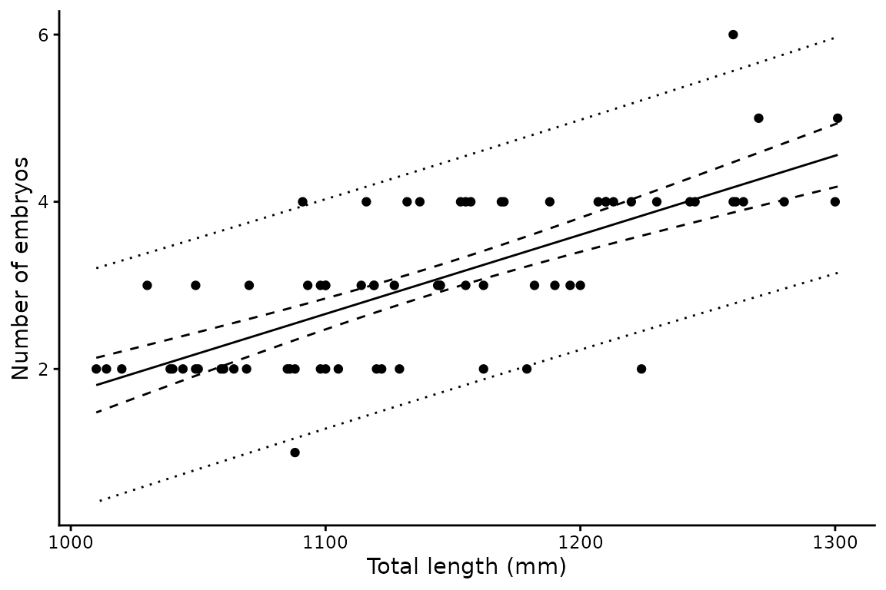
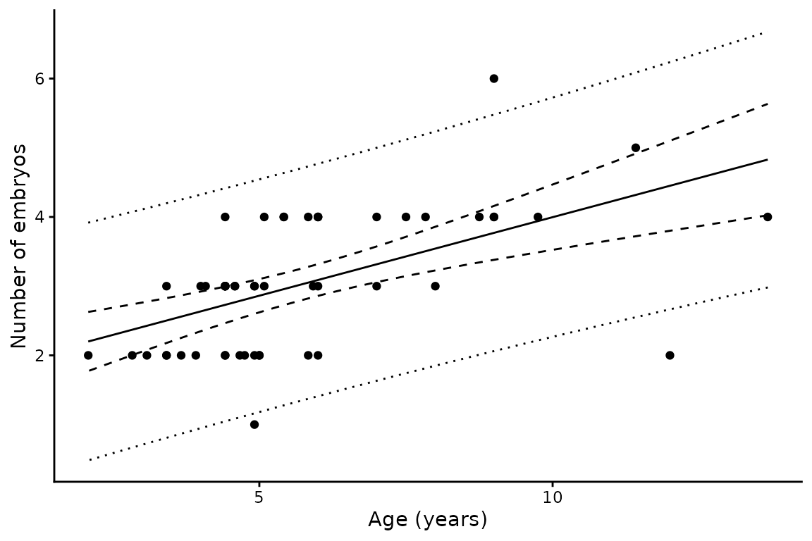

Fecundity analysis
fecundity.RmdBackground
Fecundity in chondrichthyans — the number of in utero
embryos carried by a gravid female — typically increases with maternal
body size. fecundity() fits the simplest description of
that relationship, an ordinary linear regression:
where is the number of embryos carried by female and is her length (or age). The slope is the increase in litter size per unit length, and is usually the quantity of interest.
Non-gravid animals are excluded
A fecundity count of zero means an animal was not gravid, not that
its fecundity was zero. Including such records would bias the intercept
downwards and inflate the slope. fecundity() therefore
drops records with zero or negative counts before fitting and reports
how many were removed. Predictions span the length or age range of
gravid animals only.
Basic usage
library(mustelus)
#> Welcome to mustelus package
data(spottail)
fec <- fecundity(emb, length, data = spottail)
summary(fec)
#> # A tibble: 1 × 11
#> a a.Std.Error b b.Std.Error r.squared p.value Sigma n mean.fec
#> <dbl> <chr> <dbl> <chr> <dbl> <dbl> <dbl> <int> <dbl>
#> 1 -7.75 ( 1.24 ) 0.00946 ( 0.00108 ) 0.527 7.97e-13 0.682 71 3.06
#> # ℹ 2 more variables: fec.range <chr>, x.range <chr>The summary reports the intercept and slope with their standard errors, the coefficient of determination, the p-value for the slope, the residual standard deviation , sample size, mean and range of observed fecundity, and the predictor range over which the model applies.
Plotting
plot() returns a ggplot object, which can be customised
with standard ggplot2 calls. The solid line is the fitted mean, the
dashed ribbon the 95% confidence interval, and the dotted ribbon the 95%
prediction interval — the presentation used by Walker (2005).
plot(fec) + xlab("Total length (mm)") + ylab("Number of embryos")
As in len_weight(), the two interval types answer
different questions. The confidence interval describes uncertainty in
mean litter size at a given length and narrows as data
accumulate; the prediction interval describes the spread of litter sizes
you would expect to observe in individual females, and does not
narrow appreciably. For predicting the reproductive output of a female
of known size, the prediction interval is the relevant one.
Using age as the predictor
Any continuous predictor works — here maternal age rather than length:
fec_age <- fecundity(emb, age_agree, data = spottail)
summary(fec_age)
#> # A tibble: 1 × 11
#> a a.Std.Error b b.Std.Error r.squared p.value Sigma n mean.fec
#> <dbl> <chr> <dbl> <chr> <dbl> <dbl> <dbl> <int> <dbl>
#> 1 1.73 ( 0.303 ) 0.227 ( 0.0487 ) 0.299 0.000023 0.829 53 3.04
#> # ℹ 2 more variables: fec.range <chr>, x.range <chr>
plot(fec_age) + xlab("Age (years)") + ylab("Number of embryos")
Output structure
Unlike len_weight() and maturity(),
fecundity() fits a single model and takes no grouping
variable. The result is a one row tibble whose list columns hold the
components of that fit:
# Fitted lm object
fec$mods[[1]]
#>
#> Call:
#> lm(formula = fec ~ x, data = new)
#>
#> Coefficients:
#> (Intercept) x
#> -7.752597 0.009465
# Predicted values
head(fec$preds[[1]])
#> x fec clower cupper plower pupper
#> 1 1010.000 1.806733 1.479740 2.133726 0.4080167 3.205450
#> 2 1011.462 1.820574 1.496316 2.144831 0.4224940 3.218653
#> 3 1012.925 1.834414 1.512885 2.155943 0.4369645 3.231863
#> 4 1014.387 1.848254 1.529445 2.167063 0.4514282 3.245080
#> 5 1015.849 1.862094 1.545998 2.178191 0.4658851 3.258304
#> 6 1017.312 1.875935 1.562542 2.189327 0.4803351 3.271534The preds data frame contains six columns:
x, fec (predicted mean),
clower/cupper (95% confidence interval), and
plower/pupper (95% prediction interval).